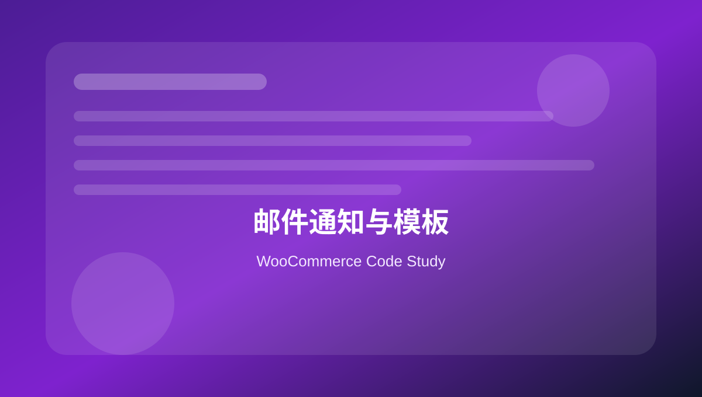

11 邮件通知与模板
整理订单邮件内容、邮件收件人、主题、标题、附件、HTML 邮件和自定义邮件触发。

首页
01
02
03
04
05
06
07
08
09
10
11
12
13
14
15
16
17
18
19
20
本页关键词
woocommerce emails
email hooks
recipients
subject
attachments
学习目标
会在订单邮件中插入内容
会修改邮件主题和收件人
会添加附件
会按状态触发自定义邮件逻辑
知道邮件送达还依赖 SMTP
代码使用提醒
本页代码用于学习和研究。复制到正式 WooCommerce 网站前，请先备份，并优先在测试环境验证。
凡是影响价格、库存、支付、订单、邮件和客户数据的代码，都需要完整测试购物车、结账、付款、退款、邮件和后台订单处理流程。
1. 订单邮件表格后添加内容
基础 · php
<?php
function mywoo_email_extra_content( $order, $sent_to_admin, $plain_text, $email ) {
if ( $sent_to_admin ) {
return;
}
echo '<p>Thank you for your order. Our team will contact you soon.</p>';
}
add_action( 'woocommerce_email_after_order_table', 'mywoo_email_extra_content', 10, 4 );
适合给客户邮件补充说明。
2. 修改新订单管理员收件人
实用 · php
<?php
function mywoo_new_order_recipients( $recipient, $order ) {
if ( ! $order instanceof WC_Order ) {
return $recipient;
}
$recipient .= ', sales@example.com';
return $recipient;
}
add_filter( 'woocommerce_email_recipient_new_order', 'mywoo_new_order_recipients', 10, 2 );
多个收件人用英文逗号分隔。
3. 根据订单地区增加收件人
实用 · php
<?php
function mywoo_region_based_order_recipient( $recipient, $order ) {
if ( ! $order instanceof WC_Order ) {
return $recipient;
}
if ( 'QLD' === $order->get_shipping_state() ) {
$recipient .= ', qld-sales@example.com';
}
return $recipient;
}
add_filter( 'woocommerce_email_recipient_new_order', 'mywoo_region_based_order_recipient', 20, 2 );
按地区分配订单跟进很常见。
4. 修改邮件主题
实用 · php
<?php
function mywoo_new_order_subject( $subject, $order ) {
if ( $order instanceof WC_Order ) {
$subject = 'New Order #' . $order->get_order_number() . ' - ' . $order->get_billing_state();
}
return $subject;
}
add_filter( 'woocommerce_email_subject_new_order', 'mywoo_new_order_subject', 10, 2 );
邮件标题清晰有助于销售快速识别订单来源。
5. 给邮件添加附件
进阶 · php
<?php
function mywoo_email_attachments( $attachments, $email_id, $order ) {
if ( 'customer_completed_order' === $email_id ) {
$file = WP_CONTENT_DIR . '/uploads/guides/installation-guide.pdf';
if ( file_exists( $file ) ) {
$attachments[] = $file;
}
}
return $attachments;
}
add_filter( 'woocommerce_email_attachments', 'mywoo_email_attachments', 10, 3 );
附件过大会影响邮件送达，建议谨慎使用。
6. 订单完成时发送内部提醒
实用 · php
<?php
function mywoo_completed_order_internal_notice( $order_id ) {
$order = wc_get_order( $order_id );
if ( ! $order ) {
return;
}
wp_mail(
'operations@example.com',
'Order completed: #' . $order->get_order_number(),
'Please archive documents for this completed order.'
);
}
add_action( 'woocommerce_order_status_completed', 'mywoo_completed_order_internal_notice' );
内部自动邮件也需要 SMTP 和日志监控。
本页总结
WooCommerce 邮件开发常见于内容补充、收件人分配、标题优化和附件。邮件代码写好后，还要测试 SMTP 和垃圾箱。